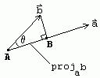
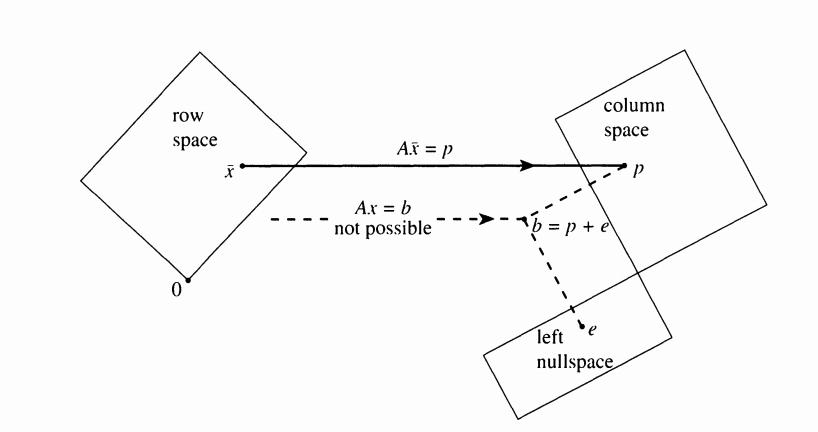

Linear Algebra Part 1
03 May 2016This is the summary of the topics covered by Gilbert Strang in his lectures
Table of Contents:
Lectures 1-5
Covers the basic matrix concepts
- Matrix Row picture and Column picture
- Can we solve for \(Ax=b\) for all \(b\) ?. No, only for \(b\)'s in the column space of \(A\).
Four ways of matrix multiplication
- Dot product
- Column picture
- Row picture
- Column times Row
Gaussian Elimination
- Operates on the rows of matrix \(A\), finally puts the matrix in Row Reduced Echelon(REF) form
- Gaussian elimination leads to \(A = LU\) form, and \(A = LDU\) form
Gauss-Jordon form
- Helps to put the elements of \(A\), in the Row Reduced Echelon Form (RREF) form
- Can be used to solve for \(x\) in \(Ax = b\), by finding RREF([\(A\) | \(b\)]) which results in [\(I\) | \(x\)]
- Can be used to find the inverse of the matrix \(A\) by finding RREF[\(A\) | \(I\)] which results in [\(I\)|\(A^{-1}\)]
Permutation matrix
- Number of permutation matrix \(A_{N*N} = N!\)
- \(P^T = P\) (where \(P^T\) is transpose(\(P\)))
- \(P P^T = I\) (Can you prove? Hint: use definition of matrix multiplication) * If the number of equations are less than number of variables, why we cannot solve the equation? * This is because rank of the matrix will be less than the number of variables we need to solve, so it will have infinite number of solutions * Use RREF(\(A\)) in matlab/octave and check
- \(A A^T\) is symmetric, prove!
Lectures 6-10
Vector Space
All linear combination of vectors are in the space, called Vector Space
Say \(P\) and \(L\) are two subspaces
- Is \(P\cup L\) a subspace? No, because some combination of vector \(A \in P\) and vector \(B \in L\) might not be in the subspace \(P\cup L\).
Column Space and Null Space
Column Space C(\(A\)) is all possible linear combinations of column vectors in a matrix \(A\)
Null Space N(\(A\)) is all the \(x\)'s for which \(Ax = 0\)
Elimination process will change Column Space of \(A\), but not the Null space of \(A\)
- This is because in the elimination process we change \(A\), but not \(x\).
Basic and Free Variables
The real difference between basic variables and free variables is that the free variables can be anything, and the basic variables are determined by solving the equations
Basic variables are also called as Pivot variables. The columns with these variables are called Pivot columns
Number of Pivot columns = Rank r of the matrix = Number of independent columns in the matrix
Number of Free columns = n - r ( n = number of columns in matrix \(A))
Solution for Ax = b
Rank tells you everything about the number of solutions
- Full column rank matrix: Unique solution exists, if \(b\) lies in column space of \(A\)
- Full row rank matrix: Infinite number of solutions
- Full row rank/ full column rank: Unique solution always exists for all \(b\)
- No full column rank/ No full row rank: Infinitely many solution exists if \(b\) lies in column space of \(A\)
Basis
- Basis of a vector space is sequence of vectors \(v_1, v_2, v_3, ..., v_N\) with the following properties
- They are independent
- They span a space
Four Subspaces
For a matrix \(A_{m*n}\)
- Column space C(\(A\)): combination of columns of \(A\), lies in \(R^n\)
- Null space N(\(A^T\)) : left null space of \(A\), lies in \(R^n\)
- Row space R(\(A\)): combination of columns of \(A^T\), lies in \(R^m\)
- Null space N(\(A\)): right null space of \(A\), lies in \(R^m\)
- Row operation on a matrix \(A\) changes the column space of \(A\), but preserves the row space of \(A\)
Lectures 11-15
Vector Space of Matrices
- Consider vector space of matrices \(A_{N*N}\)
- Dimension of vector space of symmetric matrices = \((N^2 + N)/2\)
- Dimension of vector space of skew symmetric matrices = \((N^2 - N)/2\)
- Dimension of vector space of upper triangular matrices = \((N^2 + N)/2\)
- (Symmetric matrix \(\cap\) Upper triangular matrices) = Diagonal matrices. Dimension of vector space = \((N^2 - N)/2\)
- (Symmetric matrix \(\cup\) Upper triangular matrices) = All \(N*N\) matrices. Dimension of vector space = \(N^2\)
Rank-1 Matrices
- They are special case
- They are building blocks for every other matrices
- Matrices with Rank-1 are separable matrices ( this is the application in image processing for separating the filters)
Orthogonality
- Prove that two vectors \(X\) and \(Y\) are orthogonal to each other if \(X^T Y = 0 = Y^T X\)
- Row space is perpendicular to Right null space , i.e., every vector in row space is perpendicular to every other vector in right null space
- Column space is perpendicular to left null space, i.e., every vector in column space is perpendicular to every other vector in left null space
Projection Matrix
Projection of vector \(b\) onto vector \(a\) is defined as \(p = Pb\), where \(P = (a a^T)/(a^T a) \)
Column space of projection matrix \(P\) is column space of \(a\). i.e., line through \(a\)
Properties of Projection matrices
- \(P^T = P\)
- \(P^2 = P\)
Projection matrix in general
- We have \(A^T A \hat{x} = A^T B\)
- \(P = A \hat{x}\), where \(\hat{x} = (A^T A)^{-1} A^T B\) and \(P = A (A^T A)^{-1} A^T \)
Least square problem
- Why projection ?
- When we have only few unknowns, but many equations to solve \(Ax = b\), \(b\) might not be the column space of \(A\)
- To solve for \(x\), we project \(b\) onto columns space of \(A\), so that the new vector \(\bar{b}\) is closest to \(b\)
- Eg. Measuring pulse of the heart, but repeatedly we take measurements so that on an average we can estimate the pulse. For more detailed treatment of least squares, link
The pictorial representation of solving least squares is shown below
- Least squares: \(\bar{x}\) minimizes \(b - Ax\) by solving \(A^T A \bar{x} = A^T b\)

- Least squares: \(\bar{x}\) minimizes \(b - Ax\) by solving \(A^T A \bar{x} = A^T b\)
\(A^T A\) is invertible, if \(A\) has independent columns, prove it